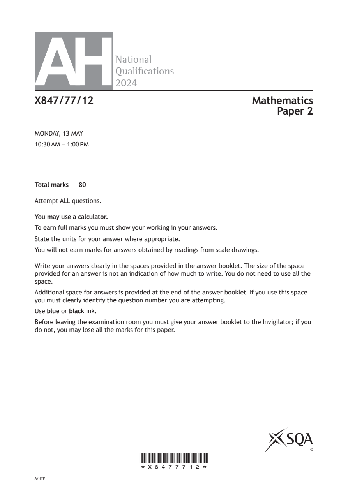
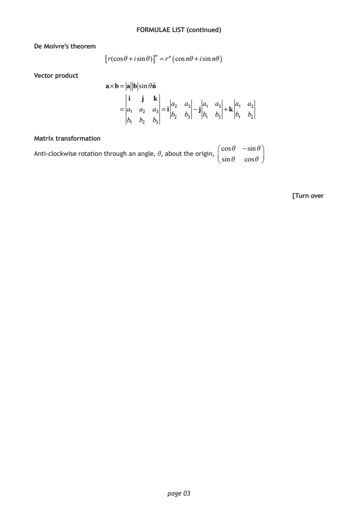
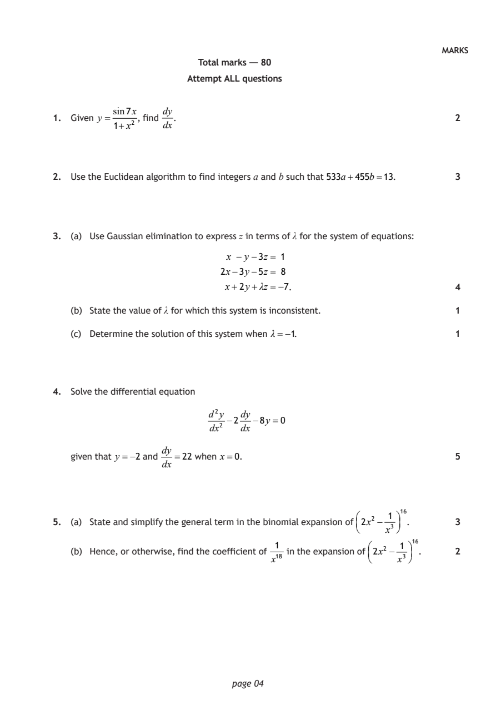
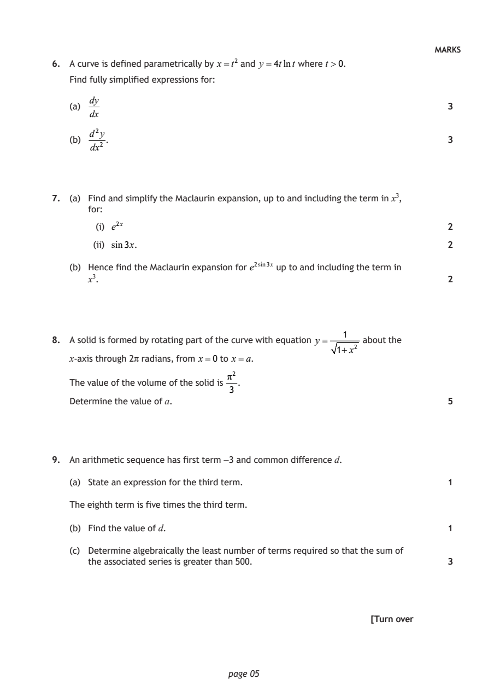
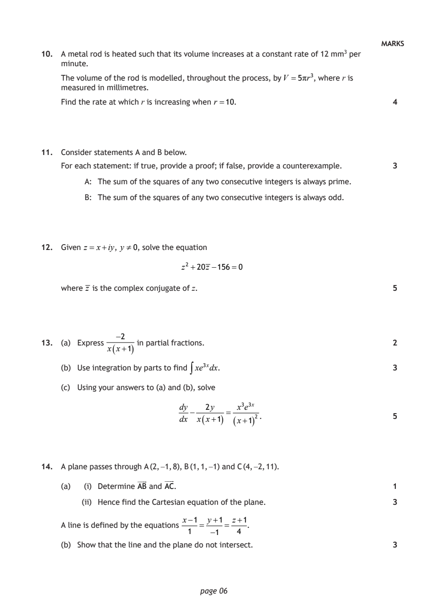
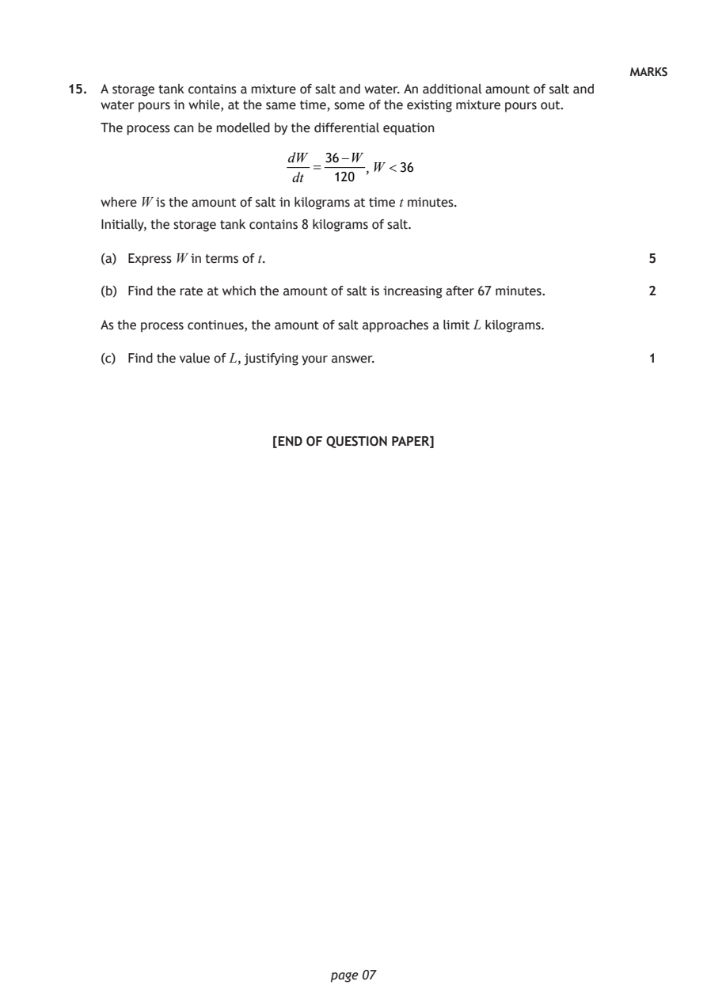

2024 Advanced Higher Mathematics - Paper 2 questions
Source: Scottish Qualifications Authority (SQA) / Qualifications Scotland. This is a StemInteract HTML companion, not an official HTML edition. Selectable text is supplied alongside original page images. Use the images or original PDF for equations, powers, fractions, vector notation, tables and diagrams; text extraction cannot fully preserve mathematical layout.
Jump to a question
PDF page 1

Selectable page text
AH
National
Qualications
2024
X847/77/12 Mathematics
Paper 2
MONDAY, 13 MAY
10:30 AM – 1:00 PM
Total marks — 80
Attempt ALL questions.
You may use a calculator.
To earn full marks you must show your working in your answers.
State the units for your answer where appropriate.
You will not earn marks for answers obtained by readings from scale drawings.
Write your answers clearly in the spaces provided in the answer booklet. The size of the space
provided for an answer is not an indication of how much to write. You do not need to use all the
space.
Additional space for answers is provided at the end of the answer booklet. If you use this space
you must clearly identify the question number you are attempting.
Use blue or black ink.
Before leaving the examination room you must give your answer booklet to the Invigilator; if you
do not, you may lose all the marks for this paper.
©
*X8477712*
A/HTPPDF page 2

Selectable page text
FORMULAE LIST
Standard derivatives Standard integrals
f (x) f′(x) f (x) ∫ f (x)dx
1
1
sin⁻¹x sec²(ax) tan(ax)+c
1−x² a
1 1 ⎛ x⎞
cos⁻¹x
−
sin⁻¹⎜ ⎟+c
1−x² a² −x² ⎝a⎠
1 1 1 ⎛ x⎞
tan⁻¹x tan⁻¹⎜ ⎟+c
1+x² a² +x² a ⎝a⎠
1
tanx sec² x ln|x|+c
x
1
cotx −cosec²x e^{a}^{x} e^{a}^{x} +c
a
secx secxtanx
cosecx −cosecxcotx
1
lnx
x
e^{x} e^{x}
Summations
1
(Arithmetic series) Sₙ = n⎡2a+(n−1)d⎤
⎣ ⎦
2
( )
a 1−rⁿ
(Geometric series) Sₙ = ,r ≠1
1−r
n n(n+1) n n(n+1)(2n+1) n n²(n+1)²
∑r = , ∑r² = , ∑r³ =
2 6 4
r=1 r=1 r=1
Binomial theorem
n ⎛n⎞ ⎛n⎞ ₙ n!
(a+b)ⁿ =∑ ⎜ ⎟aⁿ⁻^{r}b^{r} where ⎜ ⎟= Cᵣ =
⎝r⎠ ⎝r⎠ r!(n−r)!
r=0
Maclaurin expansion
f′′(0)x² f′′′(0)x³ fⁱ^{v}(0)x⁴
f(x)= f(0)+ f′(0)x+ + + +...
2! 3! 4!
page 02PDF page 3

Selectable page text
FORMULAE LIST (continued)
De Moivre’s theorem
[r(cosθ+isinθ)]ⁿ =rⁿ(cosnθ+isinnθ)
Vector product
a×b= a bsinθnˆ
i j k
a₂ a₃ a₁ a₃ a₁ a₂
= a₁ a₂ a₃ =i −j +k
b₂ b₃ b₁ b₃ b₁ b₂
b₁ b₂ b₃
Matrix transformation
⎛cosθ −sinθ⎞
Anti-clockwise rotation through an angle, θ, about the origin, ⎜ ⎟
⎝sinθ cosθ ⎠
[Turn over
page 03PDF page 4
Paper 2, Question 1Paper 2, Question 2Paper 2, Question 3Paper 2, Question 4Paper 2, Question 5
Selectable page text
MARKS
Total marks — 80
Attempt ALL questions
sin7x dy
1. Given y = , find . 2
1+x² dx
2. Use the Euclidean algorithm to find integers a and b such that 533a+455b=13. 3
3. (a) Use Gaussian elimination to express z in terms of λ for the system of equations:
x − y −3z = 1
2x−3y−5z = 8
x+2y+λz =−7. 4
(b) State the value of λ for which this system is inconsistent. 1
(c) Determine the solution of this system when λ=−1. 1
4. Solve the differential equation
d²y dy
−2 −8y =0
dx² dx
dy
given that y =−2 and =22 when x=0. 5
dx
1 ¹⁶
5. (a) State and simplify the general term in the binomial expansion of 2x² − . 3
x³
1 1 ¹⁶
(b) Hence, or otherwise, find the coefficient of in the expansion of 2x² − . 2
x¹⁸ x³
page 04PDF page 5
Paper 2, Question 6Paper 2, Question 7Paper 2, Question 8Paper 2, Question 9
Selectable page text
MARKS
6. A curve is defined parametrically by x=t² and y =4tlnt where t >0.
Find fully simplified expressions for:
dy
(a) 3
dx
d²y
(b) . 3
dx²
7. (a) Find and simplify the Maclaurin expansion, up to and including the term in x³,
for:
(i) e²^{x} 2
(ii) sin3x. 2
(b) Hence find the Maclaurin expansion for e²^{s}ⁱⁿ³x up to and including the term in
x³. 2
1
8. A solid is formed by rotating part of the curve with equation y = about the
1+x²
x-axis through 2π radians, from x=0 to x=a.
π²
The value of the volume of the solid is .
3
Determine the value of a. 5
9. An arithmetic sequence has first term −3 and common difference d.
(a) State an expression for the third term. 1
The eighth term is five times the third term.
(b) Find the value of d. 1
(c) Determine algebraically the least number of terms required so that the sum of
the associated series is greater than 500. 3
[Turn over
page 05PDF page 6
Paper 2, Question 10Paper 2, Question 11Paper 2, Question 12Paper 2, Question 13Paper 2, Question 14
Selectable page text
MARKS
10. A metal rod is heated such that its volume increases at a constant rate of 12 mm³ per
minute.
The volume of the rod is modelled, throughout the process, by V =5πr³, where r is
measured in millimetres.
Find the rate at which r is increasing when r =10. 4
11. Consider statements A and B below.
For each statement: if true, provide a proof; if false, provide a counterexample. 3
A: The sum of the squares of any two consecutive integers is always prime.
B: The sum of the squares of any two consecutive integers is always odd.
12. Given z = x+iy, y 0, solve the equation
z² +20z −156=0
where z is the complex conjugate of z. 5
−2
13. (a) Express in partial fractions. 2
x ( x+1 )
(b) Use integration by parts to find ∫xe³^{x}dx. 3
(c) Using your answers to (a) and (b), solve
dy 2y x³e³^{x}
− =
dx x ( x+1 ) (x+1 ) ² . 5
14. A plane passes through A (2, −1, 8), B (1, 1, −1) and C (4, −2, 11).
(a) (i) Determine AB and AC. 1
(ii) Hence find the Cartesian equation of the plane. 3
x−1 y+1 z+1
A line is defined by the equations = = .
1 −1 4
(b) Show that the line and the plane do not intersect. 3
page 06PDF page 7
Paper 2, Question 15
Selectable page text
MARKS
15. A storage tank contains a mixture of salt and water. An additional amount of salt and
water pours in while, at the same time, some of the existing mixture pours out.
The process can be modelled by the differential equation
dW 36−W
= , W <36
dt 120
where W is the amount of salt in kilograms at time t minutes.
Initially, the storage tank contains 8 kilograms of salt.
(a) Express W in terms of t. 5
(b) Find the rate at which the amount of salt is increasing after 67 minutes. 2
As the process continues, the amount of salt approaches a limit L kilograms.
(c) Find the value of L, justifying your answer. 1
[END OF QUESTION PAPER]
page 07PDF page 8

Selectable page text
[BLANK PAGE]
DO NOT WRITE ON THIS PAGE
page 08